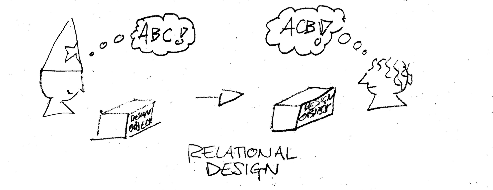
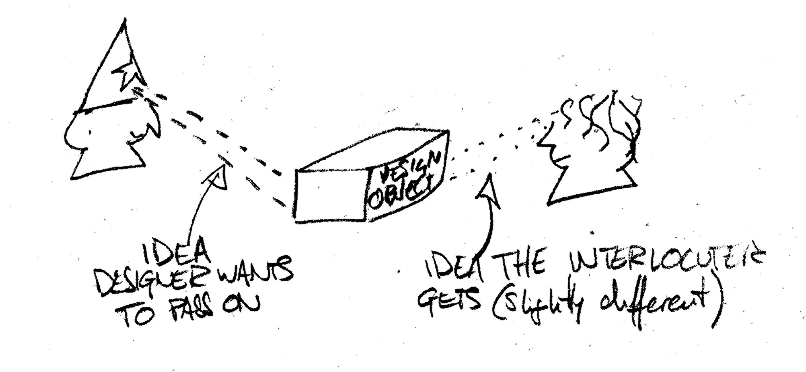
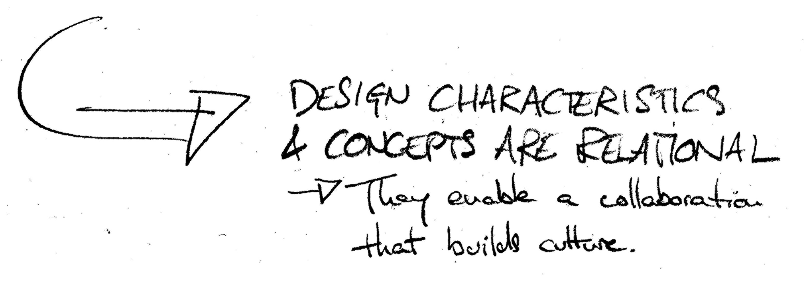
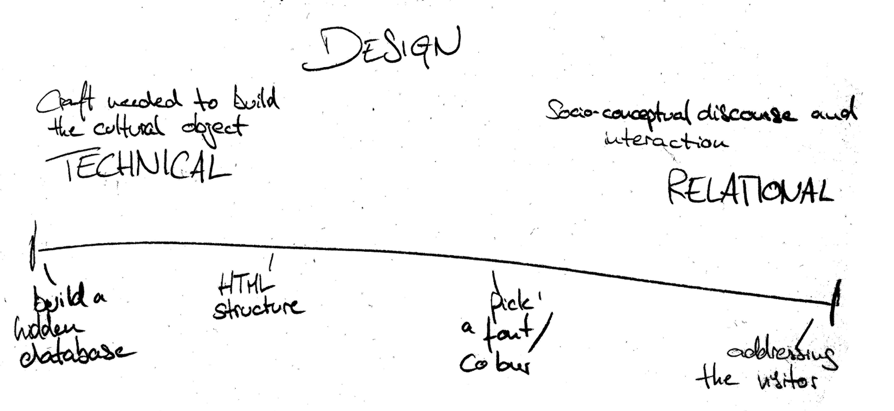
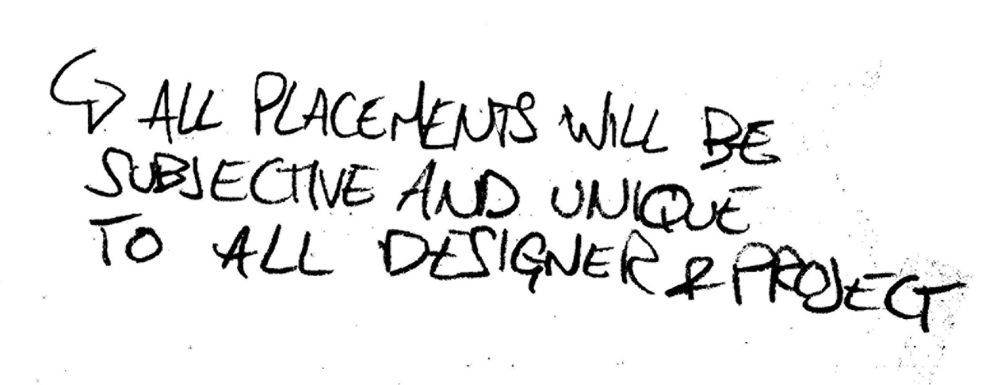
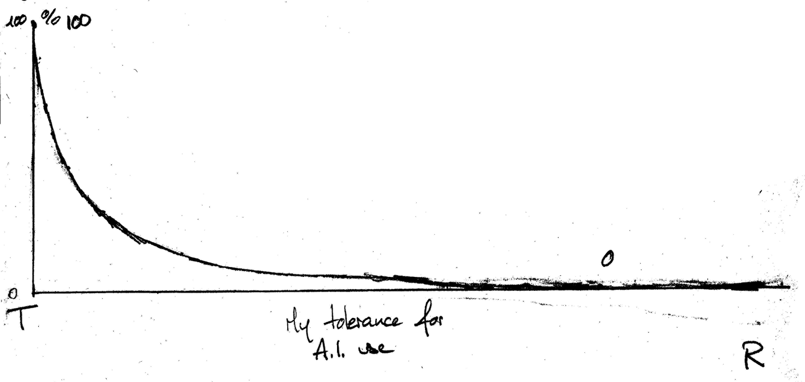
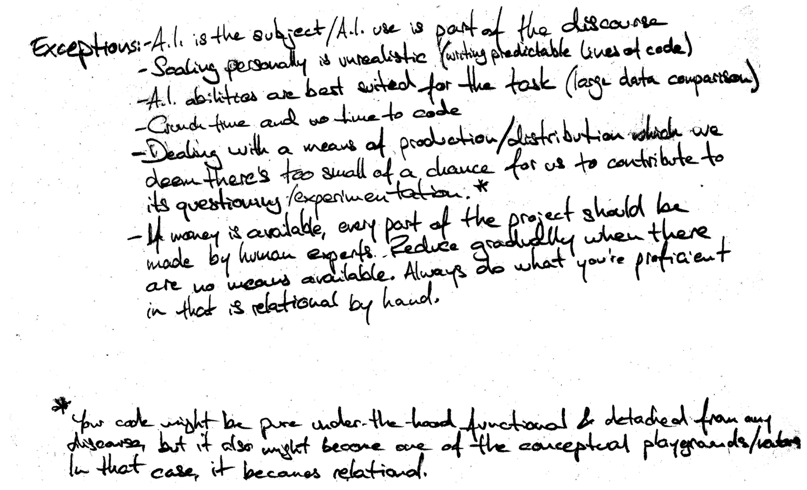

Cultural discourse is a human task. Learning is good for you. Sometimes AI allows us to make that extra step technically or live up to a conceived standard of efficiency. It’s also destroying environment and communities.